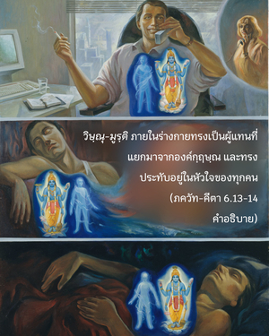

เขาควรตั้งร่างกาย คอ และศีรษะให้เป็นเส้นตรง จ้องไปที่ปลายจมูกอย่างแน่วแน่ และด้วยจิตใจที่สงบนิ่งไม่หวั่นไหว ปราศจากความกลัว เป็นอิสระจากชีวิตเพศสัมพันธ์โดยสมบูรณ์ ภายในหัวใจเขาควรทำสมาธิอยู่ที่ข้า และให้ข้าเป็นจุดมุ่งหมายสูงสุดแห่งชีวิต

จุดมุ่งหมายแห่งชีวิต คือ รู้จักองค์กฺฤษฺณ ผู้ทรงประทับอยู่ภายในหัวใจของทุกๆ ชีวิตในรูปของ ปรมาตฺมา หรือพระวิษณุสี่กร วิธีปฏิบัติโยคะก็เพื่อค้นหา และพบเห็นพระวิษณุภายในตัวเรานี้ ไม่ใช่เพื่อจุดมุ่งหมายอย่างอื่น วิษฺณุ-มูรฺติ ภายในร่างกายทรงเป็นผู้แทนที่แยกมาจากองค์กฺฤษฺณ และทรงประทับอยู่ในหัวใจของทุกคน ผู้ที่ไม่มีแผนเพื่อรู้แจ้ง วิษฺณุ-มูรฺติ นี้ได้ฝึกปฏิบัติโยคะแบบหลอกๆ ไร้ประโยชน์ และสูญเสียเวลาไปโดยเปล่าประโยชน์อย่างแน่นอน องค์กฺฤษฺณทรงเป็นจุดมุ่งหมายสูงสุดของชีวิต และวิษฺณุ-มูรฺติ ทรงสถิตภายในหัวใจของทุกคน ทรงเป็นเป้าหมายแห่งการฝึกปฏิบัติโยคะ การรู้แจ้ง วิษฺณุ-มูรฺติ ภายในหัวใจนี้ต้องถือเพศพรหมจรรย์อย่างสมบูรณ์ ดังนั้น เขาต้องออกจากบ้านไปอยู่คนเดียวในสถานที่สันโดษ และนั่งเหมือนดังที่ได้กล่าวมาแล้ว เป็นไปไม่ได้ที่จะไปหาความสุขประจำวันกับเรื่องเพศสัมพันธ์ที่บ้าน หรือที่ใดก็ตาม จากนั้นก็ไปห้องเรียนที่เขาเรียกว่าโยคะ แล้วเขาจะกลายไปเป็นโยคี เขาต้องฝึกปฏิบัติควบคุมจิตใจ และหลีกเลี่ยงการสนองประสาทสัมผัสทั้งหมด ซึ่งมีเพศสัมพันธ์เป็นตัวนำ ในกฎแห่งเพศพรหมจรรย์นักปราชญ์ผู้ยิ่งใหญ่ ยาชฺญวลฺกฺย ได้เขียนไว้ดังนี้
กรฺมณา มนสา วาจา
สรฺวาวสฺถาสุ สรฺวทา
สรฺวตฺร ไมถุน-ตฺยาโค
พฺรหฺมจรฺยํ ปฺรจกฺษเต
“คำปฏิญาณของ พฺรหฺมจรฺย เพื่อช่วยให้หลีกเลี่ยงการปล่อยตัวทางเพศ ในการทำงาน ในคำพูด และในจิตใจอย่างสมบูรณ์ตลอดเวลา ภายใต้ทุกสถานการณ์ และทุกสถานที่” ไม่มีใครสามารถฝึกปฏิบัติได้อย่างถูกต้องด้วยการไม่ควบคุมเรื่องเพศ ดังนั้น พฺรหฺมจรฺย ได้ถูกสั่งสอนตั้งแต่เด็กตอนที่เขายังไม่มีความรู้เกี่ยวกับชีวิตเพศสัมพันธ์ เด็กๆ อายุห้าขวบจะถูกส่งไปที่ คุรุ-กุล หรือสถานที่ของพระอาจารย์ทิพย์ และพระอาจารย์จะฝึกฝนเด็กน้อยเหล่านี้ให้มีระเบียบวินัยเคร่งครัดมาเป็น พฺรหฺมจารี หากไม่ได้รับการฝึกปฏิบัติเช่นนี้ก็จะไม่มีผู้ใดสามารถทำความเจริญก้าวหน้าได้ไม่ว่าจะเป็นโยคะประเภท ธฺยาน, ชฺญาน หรือ ภกฺติ ก็ตาม อย่างไรก็ดี ผู้ที่ปฏิบัติตามกฎเกณฑ์ชีวิตสมรสจะมีเพศสัมพันธ์กับภรรยาของตนเองเท่านั้น (และอยู่ภายใต้กฎเกณฑ์เช่นเดียวกัน) เรียกว่า พฺรหฺมจารี เหมือนกัน คฤหัสถ์พฺรหฺมจารี ที่ควบคุมได้เช่นนี้สถาบัน ภกฺติ ยอมรับแต่สถาบัน ชฺญาน และ ธฺยาน ไม่ยอมรับ แม้แต่คฤหัสถ์ พฺรหฺมจารี พวกเขาต้องการพรหมจรรย์อย่างสมบูรณ์โดยไม่มีการประนีประนอม ในสถาบัน ภกฺติ อนุญาตคฤหัสถ์ พฺรหฺมจารี ที่ควบคุมชีวิตเพศสัมพันธ์ได้เพราะวัฒนธรรม ภกฺติ-โยค มีพลังอำนาจมาก ซึ่งจะทำให้สูญเสียความหลงใหลทางเพศสัมพันธ์ไปโดยปริยาย ด้วยการปฏิบัติรับใช้ต่อองค์ภควานฺที่สูงกว่า ได้กล่าวไว้ใน ภควัท-คีตา (2.59) ว่า
วิษยา วินิวรฺตนฺเต
นิราหารสฺย เทหินห์
รส-วรฺชํ รโส ’ปฺยฺ อสฺย
ปรํ ทฺฤษฺฏฺวา นิวรฺตเต
“ขณะที่ผู้อื่นถูกบังคับให้ควบคุมตนเองจากการสนองประสาทสัมผัส สาวกขององค์ภควานฺละเว้นได้โดยปริยาย เพราะได้รับรสที่สูงกว่า นอกจากสาวกแล้วไม่มีผู้ใดมีข้อมูลเกี่ยวกับรสที่สูงกว่านี้”
วิคต-ภีห์ บุคคลจะปราศจากความกลัวไม่ได้นอกจากเขานั้นจะมีกฺฤษฺณจิตสำนึกอย่างสมบูรณ์ พันธวิญญาณมีความกลัวเนื่องมาจากความจำที่กลับตาลปัตร หรือลืมความสัมพันธ์นิรันดรของตนกับองค์กฺฤษฺณ ภาควต (11.2.37) กล่าวว่า ภยํ ทฺวิตียาภินิเวศตห์ สฺยาทฺ อีศาทฺ อเปตสฺย วิปรฺยโย ’สฺมฺฤติห์ กฺฤษฺณจิตสำนึกเป็นพื้นฐานเดียวที่ไร้ความกลัว ฉะนั้น การปฏิบัติที่สมบูรณ์จึงเป็นไปได้สำหรับบุคคลในกฺฤษฺณจิตสำนึก เพราะว่าจุดมุ่งหมายของการปฏิบัติโยคะก็เพื่อเห็นองค์ภควานฺอยู่ภายใน บุคคลผู้มีกฺฤษฺณจิตสำนึกจึงเป็นโยคีที่ดีที่สุดในบรรดาโยคีทั้งหลาย หลักธรรมของระบบโยคะที่กล่าว ณ ที่นี้แตกต่างจากสิ่งที่เรียกว่าสมาคมโยคะที่ได้รับความนิยมกันอยู่ในปัจจุบัน